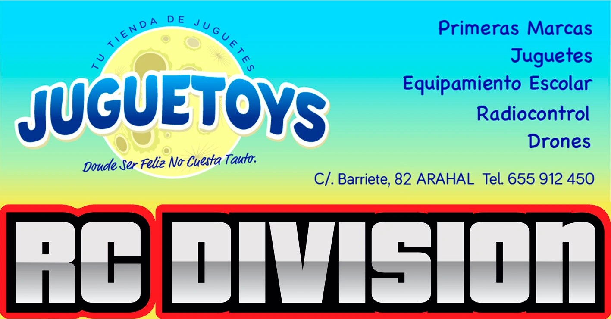
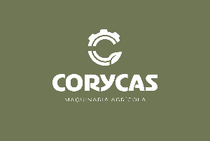
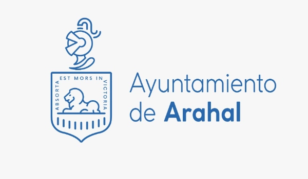

ARAHAL PREPARA SU SEMANA SANTA 2026: SEIS DÍAS DE TRADICIÓN, HISTORIA Y UN PUEBLO VOLCADO
La Semana Santa de Arahal 2026 volverá a llenar las calles del municipio del 28 de marzo al 5 de abril, con seis días de salidas procesionales que reflejan una de las tradiciones más arraigadas de la campiña sevillana.
Desde el Sábado de Pasión hasta el Domingo de Resurrección, Arahal se transforma. No solo por sus hermandades, sino por la implicación de todo un pueblo que vive estos días como algo propio.
Uno de los grandes cambios recientes llegó en 2025, cuando la Agrupación Parroquial de Nuestro Padre Jesús de la Salud realizó por primera vez su salida en Sábado de Pasión, incorporando una nueva jornada al calendario y ampliando la Semana Santa local.
Cada hermandad aporta su carácter. No hay dos días iguales. Desde el ambiente familiar del Domingo de Ramos hasta la intensidad de la Misericordia o el cierre luminoso del Domingo de Resurrección, Arahal ofrece una Semana Santa completa, con identidad propia.
Un modelo que sigue creciendo, tanto en participación como en interés turístico, consolidando al municipio como referencia cofrade en la provincia de Sevilla.
Sábado de Pasión
Agrupación Parroquial de Nuestro Padre Jesús de la Salud
Revive lo mejor del año pasado
La Semana Santa de Arahal también se vive gracias a sus empresas.
Ellas hacen posible que podamos grabar, compartir y recordar cada momento. Gracias por apostar por Arahal.
Mapa de recorrido
La Semana Santa de Arahal 2026 comienza con la salida de la Agrupación Parroquial de Nuestro Padre Jesús de la Salud, una de las incorporaciones más recientes al calendario cofrade local.
La salida está prevista a las 17:00 horas desde la Iglesia de Nuestra Señora de la Victoria, con recogida en torno a las 00:00 horas. El recorrido atraviesa zonas como Puerta Utrera, Paseo Gabriel Mengíbar, la Plaza de la Corredera o la calle San Roque.
La imagen titular es Nuestro Padre Jesús de la Salud, obra del imaginero Manuel Martín Nieto, que ha ido ganando devoción en los últimos años.
El año 2025 marcó un hito al ser la primera salida de esta agrupación, consolidando el Sábado de Pasión como una jornada propia dentro de la Semana Santa de Arahal.
La Semana Santa de Arahal también se vive gracias a sus empresas.
Ellas hacen posible que podamos grabar, compartir y recordar cada momento. Gracias por apostar por Arahal.

Patrocinador Destacado
Mapa de recorrido
El Domingo de Ramos, 29 de marzo, abre oficialmente la Semana Santa de Arahal con la salida de la Hermandad del Santo Entierro, en su paso de la Borriquita. Es una de las jornadas más queridas por las familias y uno de los momentos con más ambiente en las calles del pueblo.
La salida está fijada a las 11:45 horas y la entrada a las 15:30 horas. El recorrido oficial será: San Roque, Doctor Gamero, Tahona, Asencio Martín, IV Conde de Ureña, Victoria, Tahona, Doctor Morillas, Felipe Ramírez, Plaza de la Corredera, Veracruz, Espaderos, Monjas, Sevilla y templo.
La procesión representa la Sagrada Entrada de Jesús en Jerusalén, en una escena llena de movimiento y simbolismo que marca el comienzo de la Semana Santa. En 2026, Arahal volverá a vivir una mañana de palmas, alegría y tradición con una de sus salidas más populares.
La Semana Santa de Arahal también se vive gracias a sus empresas.
Ellas hacen posible que podamos grabar, compartir y recordar cada momento. Gracias por apostar por Arahal.

Patrocinador Destacado
Mapa de recorrido
El Miércoles Santo, 1 de abril, llegará con la salida de la Hermandad de la Vera Cruz, una de las corporaciones con más personalidad dentro de la Semana Santa de Arahal. Es una jornada con sello propio, muy reconocible para los cofrades del municipio.
La salida será a las 20:30 horas y la entrada a las 00:30 horas. El itinerario previsto para 2026 es: Cruz, Plaza de la Corredera, Pérez Galdós, Madre de Dios, Doña Luisa, Iglesia, Marchena, Carmona, Pozo Dulce, Morón, María Beltrán, Madre de Dios, General Marina, San Pedro, Cruz, Pedrera, Victoria, Tahona, Asencio Martín, IV Conde de Ureña, Doctor Gamero, Serrano, Monjas, Espaderos, Vera-Cruz y templo.
La hermandad pone en la calle al Santísimo Cristo del Amor junto a Nuestra Madre y Señora de la Piedad, en uno de los conjuntos más representativos de la Semana Santa arahalense. Su recorrido por el centro del pueblo deja cada año imágenes muy esperadas.
La Semana Santa de Arahal también se vive gracias a sus empresas.
Ellas hacen posible que podamos grabar, compartir y recordar cada momento. Gracias por apostar por Arahal.
Patrocinador Destacado
Mapa de recorrido
El Jueves Santo, 2 de abril, será de nuevo uno de los días grandes de la Semana Santa de Arahal con la salida de la Hermandad de la Misericordia. En 2026, además, la corporación vive un año muy señalado al celebrar su 525 aniversario, una fecha que refuerza su peso histórico dentro del municipio.
La salida está prevista a las 19:00 horas y la entrada a la 01:30 horas. El itinerario oficial será: Plaza del Santo Cristo, Misericordia, Plaza Nuestro Padre Jesús Nazareno, Iglesia, Doña Luisa, Pozo Dulce, Carmona, Marchena, Juan Leonardo, Plaza Vieja, Sevilla, Plaza de San Roque, San Roque, Doctor Gamero, IV Conde de Ureña, Victoria, Tahona, Doctor Morillas, Felipe Ramírez, Plaza de la Corredera, Vera-Cruz, Iglesia, Plaza Nuestro Padre Jesús Nazareno, Misericordia, Plaza del Santo Cristo y templo.
La hermandad procesiona al Santísimo Cristo de la Misericordia, obra de Antonio Castillo Lastrucci realizada en 1937, y a María Santísima de los Dolores. Es una de las estaciones de penitencia con mayor seguimiento popular y uno de los momentos más destacados de la semana.
La Semana Santa de Arahal también se vive gracias a sus empresas.
Ellas hacen posible que podamos grabar, compartir y recordar cada momento. Gracias por apostar por Arahal.
Mapa de recorrido
La Madrugá del Viernes Santo, 3 de abril, volverá a ser una de las citas más intensas de la Semana Santa de Arahal con la salida de la Hermandad de Jesús Nazareno. Es una de las jornadas de mayor devoción y también una de las más esperadas por el pueblo.
La salida será a las 04:45 horas y la entrada a las 13:45 horas. El recorrido oficial anunciado es: Plaza Nuestro Padre Jesús Nazareno, Iglesia, Espaderos, Monjas, Sevilla, Juan Pérez, San Roque, Doctor Gamero, IV Conde de Ureña, Victoria, Pedrera, Miraflores, Puerta Utrera, Victoria, Tahona, Doctor Morillas, Felipe Ramírez, Plaza de la Corredera, Duque, San Pedro, Cruz, Madre de Dios, Pérez Galdós, Plaza de la Corredera, Vera-Cruz, Iglesia, Plaza Nuestro Padre Jesús Nazareno y templo.
La hermandad pone en la calle a Nuestro Padre Jesús Nazareno y a Nuestra Señora de los Dolores, en una procesión marcada por la emoción y la fidelidad de quienes acompañan esta salida año tras año.
La Semana Santa de Arahal también se vive gracias a sus empresas.
Ellas hacen posible que podamos grabar, compartir y recordar cada momento. Gracias por apostar por Arahal.
Patrocinador Destacado
Mapa de recorrido
La tarde del Viernes Santo, 3 de abril, tendrá como protagonista a la Hermandad de la Esperanza, una de las corporaciones con más seguimiento de la Semana Santa de Arahal y una de las que más público reúne a lo largo de todo su recorrido.
La salida está prevista a las 18:30 horas y la entrada a la 01:15 horas. El itinerario oficial será:Iglesia, Espaderos, Monjas, Sevilla, Juan Pérez, San Roque, Doctor Gamero, Tahona, Asencio Martín, IV Conde de Ureña, Victoria, Pedrera, Cruz, San Pedro, General Marina, Madre de Dios, María Beltrán, Morón, Madre de Dios, Pérez Galdós, Plaza de la Corredera, Vera-Cruz, Iglesia y templo.
La cofradía pone en la calle al Santísimo Cristo de la Esperanza y a Nuestra Señora de las Angustias, acompañados por San Juan Evangelista. Es una salida muy esperada y una de las grandes citas del Viernes Santo en Arahal
La Semana Santa de Arahal también se vive gracias a sus empresas.
Ellas hacen posible que podamos grabar, compartir y recordar cada momento. Gracias por apostar por Arahal.
Mapa de recorrido
La jornada del Viernes Santo se cerrará con la salida de la Hermandad del Santo Entierro, una de las corporaciones con más historia de la Semana Santa de Arahal. Su presencia en la calle marca uno de los momentos más solemnes y reconocibles de toda la semana.
La salida será a las 20:30 horas y la entrada a las 02:30 horas. El recorrido oficial de 2026 es: San Roque, Doctor Gamero, IV Conde de Ureña, Victoria, Tahona, Doctor Morillas, Felipe Ramírez, Plaza de la Corredera, Duque, General Marina, Madre de Dios, María Beltrán, Morón, Madre de Dios, Pérez Galdós, Plaza de la Corredera, Vera-Cruz, Espaderos, Monjas, Sevilla y templo.
La hermandad procesiona al Cristo Yacente y a María Santísima de los Dolores, en una estación de penitencia que mantiene un fuerte peso histórico y devocional dentro del calendario cofrade local.
La Semana Santa de Arahal también se vive gracias a sus empresas.
Ellas hacen posible que podamos grabar, compartir y recordar cada momento. Gracias por apostar por Arahal.

Patrocinador Destacado
Mapa de recorrido
La Semana Santa de Arahal 2026 concluirá el Domingo de Resurrección, 5 de abril, con la salida de la Hermandad de San Antonio de Padua, responsable de la procesión del Cristo Resucitado, obra de Francisco José Coronado.
La jornada se divide en dos recorridos. El itinerario de ida tendrá salida a las 08:30 horas y entrada a las 09:45 horas, por: Plaza de San Antonio, San Pablo, San Mateo, San Lucas, Plaza Cristo Resucitado, San Lorenzo, San Pablo, Carmona, Marchena, Plaza Nuestro Padre Jesús Nazareno y Parroquia.
El itinerario de regreso comenzará a las 11:30 horas y terminará a las 15:00 horas, con este recorrido: Plaza Nuestro Padre Jesús Nazareno, Iglesia, Veracruz, Plaza de la Corredera, Duque, General Marina, Madre de Dios, María Beltrán, Dorado, Óleo, Málaga, San Antonio, Falla, Plaza de San Antonio y Ermita.
Es una jornada distinta al resto, más luminosa y festiva, que pone el broche final a la Semana Santa de Arahal.
Encuentra en nuestro canal de YouTube todos los videos de la Semana Santa de Arahal de años anteriores para vivir el paso a paso del tiempo de nuestra Semana grande.